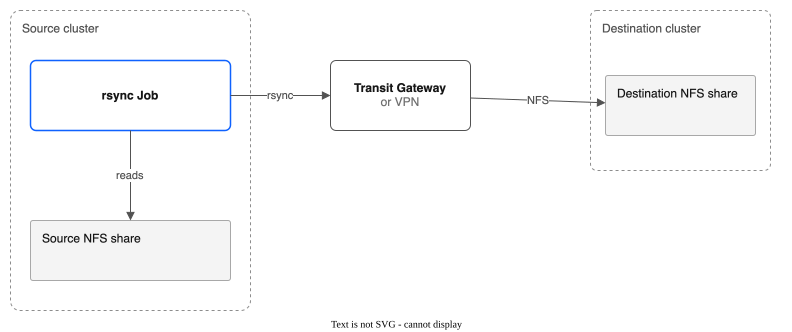
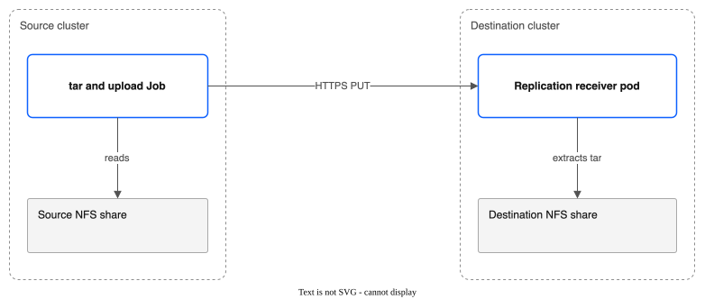

Part 6: Replication and Failover¶
Tutorial Series: Index | Part 1: Pool Creation | Part 2: Snapshots & Clones | Part 3: Group Snapshots & Hooks | Part 4: Pool Configuration | Part 5: Golden Images | Part 6 | Part 7: Monitoring | Part 8: Migration & Console | Part 9: COS Backup Bucket
Step-by-step guide to setting up cross-region disaster recovery replication between two clusters, pausing and resuming sync, using lifecycle hooks, inspecting metadata, and performing failover to bring workloads online at the DR site.
Source cluster: ROKS eu-de (Frankfurt) Destination cluster: ROKS us-east (Washington, DC) -- or same cluster for testing
Prerequisites¶
You need two ROKS or ROVS clusters with the CSI driver deployed (source and destination). For a single-cluster walkthrough, you can use the same cluster for both roles.
Verify the CSI driver is running on the source cluster:
# Controller pod (6/6 Running)
oc get pods -n kube-system -l app.kubernetes.io/name=ibm-vpc-file-pool-csi,app.kubernetes.io/component=controller
# Node pods (Running on each schedulable node)
oc get pods -n kube-system -l app.kubernetes.io/name=ibm-vpc-file-pool-csi,app.kubernetes.io/component=node
# CSI Driver registered
oc get csidriver vpc-file-pool.csi.ibm.io
# CRD installed
oc get crd replicationpolicies.storage.ibmcloud.io
Verify the same on the destination cluster (switch kubeconfig or context as needed).
For direct NFS mode, the destination NFS share must be reachable from the source cluster over IBM Transit Gateway or VPN. For driver-to-driver mode, only HTTPS connectivity between clusters is required: the source cluster's nodes must be able to reach the destination cluster's Route address. On ROKS and ROVS the Route is on the cluster's public ingress address, so the nodes need outbound internet access.
Driver-to-driver mode also needs a pool on the destination cluster for the receiver's volume, and either cert-manager (for the receiver's own certificate) or the Route's TLS (see Step 6c). Check cert-manager on the destination cluster:
A new ROKS or ROVS cluster does not have it.
Overview: Two Replication Modes¶
The CSI driver supports two replication modes, each suited to different network topologies:
Direct NFS mode -- The source cluster mounts the destination NFS share and uses rsync to transfer SubVolume data. This requires NFS reachability between clusters (Transit Gateway or VPN). Supports rsync incremental sync for bandwidth efficiency.

Driver-to-driver mode -- The source cluster creates Jobs that tar SubVolume data and upload it via HTTPS PUT to a receiver pod on the destination cluster. Works across any network that allows HTTPS. The receiver extracts the tar stream to the destination NFS share.

The rsync and tar copies apply to volumes that are not disks of a running VM. The controller copies a running VM's disks with QEMU instead. See Running VMs.
Step 1: Clean Up Any Previous Tutorial Resources¶
REPL_POOL=repl-pool
REPL_NS=pool-tutorial-repl
# 1. Delete pods and PVCs
oc delete pods --all -n ${REPL_NS} --force --grace-period=0 --ignore-not-found
oc delete pvc --all -n ${REPL_NS} --timeout=60s --ignore-not-found
# 2. Delete this tutorial's ReplicationPolicies, by name.
# ReplicationPolicy is cluster-wide. Never use --all on a cluster that others share.
oc delete replicationpolicy dr-driver dr-with-hooks dr-with-http-hooks --ignore-not-found
# 3. Grace period for CSI to cascade SubVolume deletes
sleep 5
# 4. Force-clean orphan SubVolumes
for sv in $(oc get subvolumes.storage.ibmcloud.io \
-l storage.ibmcloud.io/pool=${REPL_POOL} -o name 2>/dev/null); do
oc patch "$sv" --type=merge -p '{"metadata":{"finalizers":null}}'
done
oc delete subvolumes.storage.ibmcloud.io \
-l storage.ibmcloud.io/pool=${REPL_POOL} --ignore-not-found
# 5. Delete pool
oc delete filesharepool ${REPL_POOL} --timeout=60s --ignore-not-found || {
oc patch filesharepools.storage.ibmcloud.io ${REPL_POOL} \
--type=merge -p '{"metadata":{"finalizers":null}}'
oc delete filesharepool ${REPL_POOL} --ignore-not-found
}
# 6. Delete namespace
oc delete namespace ${REPL_NS} --timeout=60s --ignore-not-found
Step 2: Set Up Variables, Namespace, and Source Pool¶
# Shell variables used throughout this tutorial
export REPL_POOL=repl-pool
export REPL_NS=pool-tutorial-repl
# Create namespace
oc create namespace ${REPL_NS}
Create the source pool:
cat <<EOF | oc apply -f -
apiVersion: storage.ibmcloud.io/v1alpha1
kind: FileSharePool
metadata:
name: ${REPL_POOL}
spec:
zone: eu-de-1
profile: dp2
shareSizeGB: 100
iops: 100
maxShares: 2
initialShares: 1
autoExpand: false
allocationStrategy: spread
defaultPermissions: "0777"
defaultUID: 107
defaultGID: 107
EOF
What this does:
- Creates a pool named repl-pool in eu-de-1 with a single 100 GB share
- Uses the dp2 profile at 100 IOPS (sufficient for tutorial data)
- Directories are owned by UID 107 (QEMU user), suitable for KubeVirt workloads
Watch the pool initialize:
Wait until PHASE shows Ready:
Step 3: Provision PVCs with Test Data¶
Create three PVCs with writer pods to populate test data:
cat <<EOF | oc apply -f -
apiVersion: v1
kind: PersistentVolumeClaim
metadata:
name: repl-app-data
namespace: ${REPL_NS}
labels:
app: repl-demo
spec:
accessModes:
- ReadWriteMany
storageClassName: ${REPL_POOL}
resources:
requests:
storage: 5Gi
---
apiVersion: v1
kind: PersistentVolumeClaim
metadata:
name: repl-app-logs
namespace: ${REPL_NS}
labels:
app: repl-demo
spec:
accessModes:
- ReadWriteMany
storageClassName: ${REPL_POOL}
resources:
requests:
storage: 5Gi
---
apiVersion: v1
kind: PersistentVolumeClaim
metadata:
name: repl-app-config
namespace: ${REPL_NS}
labels:
app: repl-demo
spec:
accessModes:
- ReadWriteMany
storageClassName: ${REPL_POOL}
resources:
requests:
storage: 2Gi
EOF
Verify PVCs are bound:
Expected output:
NAME STATUS VOLUME CAPACITY ACCESS MODES STORAGECLASS AGE
repl-app-data Bound pvc-aaa... 5Gi RWX repl-pool 5s
repl-app-logs Bound pvc-bbb... 5Gi RWX repl-pool 5s
repl-app-config Bound pvc-ccc... 2Gi RWX repl-pool 5s
Write test data to each PVC:
cat <<EOF | oc apply -f -
apiVersion: v1
kind: Pod
metadata:
name: repl-writer
namespace: ${REPL_NS}
spec:
restartPolicy: Never
containers:
- name: writer
image: busybox
command:
- sh
- -c
- |
echo "Application database export - \$(date)" > /data/db-dump.sql
dd if=/dev/urandom of=/data/payload.bin bs=1M count=10 2>/dev/null
echo "Data written: \$(ls -lh /data/)"
echo "Access log entry - \$(date)" > /logs/access.log
echo "Error log entry - \$(date)" > /logs/error.log
echo "Logs written: \$(ls -lh /logs/)"
echo "app.replicas=3" > /config/app.properties
echo "db.host=10.0.0.5" >> /config/app.properties
echo "Config written: \$(cat /config/app.properties)"
echo "All test data written successfully."
volumeMounts:
- name: data
mountPath: /data
- name: logs
mountPath: /logs
- name: config
mountPath: /config
volumes:
- name: data
persistentVolumeClaim:
claimName: repl-app-data
- name: logs
persistentVolumeClaim:
claimName: repl-app-logs
- name: config
persistentVolumeClaim:
claimName: repl-app-config
EOF
Wait for the writer to complete and verify:
oc get pod repl-writer -n ${REPL_NS} -w
# Wait for STATUS=Completed
oc logs repl-writer -n ${REPL_NS}
Verify SubVolumes and pool capacity:
Clean up the writer pod:
Step 4: Direct NFS Replication¶
Direct NFS mode uses rsync Jobs to transfer SubVolume data from the source pool's NFS share to a destination NFS share. The destination share must be reachable from source cluster worker nodes over Transit Gateway or VPN.
Note: Replace
10.240.0.50with the actual NFS mount target IP of your destination share, anddestinationExportPathwith its export path. A share in security group mode (the only mode for new shares) exports a path such as/299a1485_593a_403d_98da_b0958e446b16, not/. With/the sync Jobs fail. Both values are in the destination pool's status (status.shares[].mountTargetIPandstatus.shares[].exportPath), or in themount_pathofibmcloud is share-mount-target <DEST_SHARE_ID> <MOUNT_TARGET_ID>(<ip>:<export path>).
Create a ReplicationPolicy:
cat <<EOF | oc apply -f -
apiVersion: storage.ibmcloud.io/v1alpha1
kind: ReplicationPolicy
metadata:
name: dr-direct
spec:
sourcePoolName: ${REPL_POOL}
destinationNFSServer: "10.240.0.50"
destinationExportPath: "/299a1485_593a_403d_98da_b0958e446b16" # the export path of your destination share
destinationBasePath: "/pvcs"
schedule: "5m"
incrementalSync: true
maxParallelSyncs: 2
bandwidthLimitMbps: 100
maxRetries: 3
EOF
What this does:
- Replicates all SubVolumes in repl-pool to the destination NFS server at 10.240.0.50
- Syncs every 5 minutes using rsync incremental mode (only changed files are transferred)
- Runs up to 2 SubVolume syncs in parallel
- Limits rsync bandwidth to 100 Mbps to avoid saturating the Transit Gateway link
- Pauses the policy after 3 consecutive failures
Watch the policy status:
Expected output after the first sync cycle:
NAME SOURCE DEST SCHEDULE PHASE LAST SYNC
dr-direct repl-pool 10.240.0.50 5m Active 2026-02-25T14:30:00Z
Inspect per-SubVolume replication status:
Expected output:
subVolumeStatuses:
- subVolumeName: pvc-aaa11111-2222-3333-4444-555566667777
lastSyncTime: "2026-02-25T14:30:02Z"
bytesSynced: 10485760
- subVolumeName: pvc-bbb11111-2222-3333-4444-555566667777
lastSyncTime: "2026-02-25T14:30:03Z"
bytesSynced: 2048
- subVolumeName: pvc-ccc11111-2222-3333-4444-555566667777
lastSyncTime: "2026-02-25T14:30:01Z"
bytesSynced: 128
Optional: Filter Which SubVolumes Are Replicated¶
By default, all SubVolumes in the source pool are replicated. Use subVolumeSelector to replicate only a subset:
cat <<EOF | oc apply -f -
apiVersion: storage.ibmcloud.io/v1alpha1
kind: ReplicationPolicy
metadata:
name: dr-selective
spec:
sourcePoolName: ${REPL_POOL}
destinationNFSServer: "10.240.0.50"
destinationExportPath: "/"
destinationBasePath: "/pvcs"
schedule: "15m"
maxRetries: 3
subVolumeSelector:
matchLabels:
app: repl-demo
EOF
What this does:
- Only replicates SubVolumes whose parent PVCs have the label app: repl-demo
- Uses a 15-minute schedule (less frequent than the full-pool policy)
Optional: Custom rsync Flags¶
Direct NFS mode supports extra rsync flags via rsyncOptions. Dangerous flags (--daemon, --server, --rsh, --rsync-path) are rejected by the validating webhook.
Clean up the selective policy (keep dr-direct for the next steps):
Step 5: Pause and Resume Replication¶
To temporarily stop replication (for example, during maintenance), annotate the policy:
Verify the phase changes to Paused. The controller checks the annotation about every 30 seconds, so wait a minute:
Expected output:
NAME SOURCE DEST SCHEDULE PHASE LAST SYNC
dr-direct repl-pool 10.240.0.50 5m Paused 2026-02-25T14:30:00Z
What this does:
- The replication controller detects the storage.ibmcloud.io/paused: "true" annotation
- Status phase is updated to Paused
- No new sync Jobs are created while paused
- In-flight Jobs are allowed to complete
To resume replication, remove the annotation:
Verify the phase returns to Active:
Expected output:
NAME SOURCE DEST SCHEDULE PHASE LAST SYNC
dr-direct repl-pool 10.240.0.50 5m Active 2026-02-25T14:30:00Z
The next sync cycle will run at the scheduled interval from when the policy was resumed.
Clean up the direct NFS policy before moving to driver-to-driver mode:
Step 6: Driver-to-Driver Replication¶
Driver-to-driver mode is the recommended approach when Transit Gateway NFS reachability is not available or when you want HTTPS-based replication with authentication and TLS.
The source cluster creates Jobs that tar SubVolume data and upload it via HTTPS PUT to a receiver pod on the destination cluster. The receiver extracts the tar stream to the destination NFS share.
Step 6a: Generate an Auth Token¶
Generate a shared bearer token used to authenticate the source cluster to the destination receiver:
Save this token -- you will need it on both clusters.
Step 6b: Set Up the Destination Cluster¶
Switch to the destination cluster context (or use a separate terminal with the destination kubeconfig):
Create the auth token Secret on the destination cluster:
cat <<EOF | oc apply -f -
apiVersion: v1
kind: Secret
metadata:
name: repl-receiver-token
namespace: kube-system
type: Opaque
stringData:
token: "${REPL_TOKEN}"
EOF
What this does:
- Creates a Secret in kube-system containing the bearer token
- The receiver pod reads this token file and validates incoming requests
You also need a destination PVC. It is the receiver's data volume, so it lives on a pool on the destination cluster. The pool repl-pool exists only on the source cluster, so make a pool on the destination cluster first. Use a zone of the destination cluster. The pool can be small: the volume only has to hold the data you replicate.
export DR_POOL=dr-repl-pool
cat <<EOF | oc apply -f -
apiVersion: storage.ibmcloud.io/v1alpha1
kind: FileSharePool
metadata:
name: ${DR_POOL}
spec:
zone: eu-de-3 # a zone of the destination cluster
profile: dp2
shareSizeGB: 20
iops: 100
maxShares: 1
initialShares: 1
autoExpand: false
defaultPermissions: "0777"
defaultUID: 107
defaultGID: 107
EOF
oc get filesharepool ${DR_POOL} # wait for PHASE Ready
Then make the volume on that pool:
cat <<EOF | oc apply -f -
apiVersion: v1
kind: PersistentVolumeClaim
metadata:
name: repl-destination-data
namespace: kube-system
spec:
accessModes:
- ReadWriteMany
storageClassName: ${DR_POOL}
resources:
requests:
storage: 10Gi
EOF
Note: If you are testing on the same cluster, you can use any RWX PVC. For a real DR setup, this PVC would be on a pool in the destination region. Make it big enough for everything you replicate.
Step 6c: Enable the Receiver via Helm¶
Upgrade the Helm release on the destination cluster to enable the replication receiver. Use the chart that matches the image you run (the chart in the same release as the driver image). A chart that is newer than the image can stop the controller from starting.
Option A: the receiver has its own certificate (needs cert-manager).
helm upgrade ibm-vpc-file-pool-csi charts/ibm-vpc-file-pool-csi \
-n kube-system \
--reuse-values \
--set replicationReceiver.enabled=true \
--set replicationReceiver.pvcName=repl-destination-data \
--set replicationReceiver.authSecretName=repl-receiver-token \
--set replicationReceiver.tls.enabled=true
What this does:
- Deploys the replication receiver as a Deployment in kube-system
- Mounts the destination PVC at /data inside the receiver container
- Configures TLS with a self-signed certificate from cert-manager
- Creates a Service (ibm-vpc-file-pool-csi-replication-receiver) on port 8443
- Creates an OpenShift Route with TLS passthrough (auto-detected on OpenShift clusters)
- Provisions a cert-manager Certificate with SANs for the Service and Route hostnames
Without cert-manager, this command fails with no matches for kind "Certificate" in version "cert-manager.io/v1", and nothing is changed.
Option B: the Route provides the TLS (no cert-manager). Set tls.enabled=false. The receiver then speaks plain HTTP inside the cluster, and the OpenShift Route ends the TLS with the cluster's ingress certificate. A ROKS or ROVS ingress certificate is signed by a public CA, so the source cluster trusts it without a CA Secret (skip Step 6d, and leave destinationCACertSecretRef out of the policy). The bearer token still protects the receiver.
helm upgrade ibm-vpc-file-pool-csi charts/ibm-vpc-file-pool-csi \
-n kube-system \
--reuse-values \
--set replicationReceiver.enabled=true \
--set replicationReceiver.pvcName=repl-destination-data \
--set replicationReceiver.authSecretName=repl-receiver-token \
--set replicationReceiver.tls.enabled=false
The Route is now of type edge instead of passthrough.
Verify the receiver is running:
Expected output:
NAME READY STATUS RESTARTS AGE
ibm-vpc-file-pool-csi-replication-receiver-5d8f9c7b4-x2k9j 1/1 Running 0 30s
Verify the Route is created:
Note the Route hostname (e.g., ibm-vpc-file-pool-csi-replication-receiver-kube-system.apps.dest-cluster.example.com). You will need this for the source cluster configuration.
export RECEIVER_HOST=$(oc get route -n kube-system \
-l app.kubernetes.io/component=replication-receiver \
-o jsonpath='{.items[0].spec.host}')
echo "Receiver endpoint: https://${RECEIVER_HOST}"
Check that the receiver answers (with Option B this also shows that the Route certificate is trusted). The first call needs no token and returns 200. The second shows that the token is needed: 401.
curl -s -o /dev/null -w "%{http_code}\n" https://${RECEIVER_HOST}/api/v1/health
curl -s -o /dev/null -w "%{http_code}\n" https://${RECEIVER_HOST}/api/v1/auth-check
Step 6d: Extract the CA Certificate¶
Option A only. (With Option B, skip this step and Step 6e's CA Secret.) The self-signed CA certificate must be trusted by the source cluster. Extract it from the cert-manager Secret:
oc get secret ibm-vpc-file-pool-csi-receiver-certs -n kube-system \
-o jsonpath='{.data.ca\.crt}' | base64 -d > /tmp/receiver-ca.crt
cat /tmp/receiver-ca.crt
Note: If the cert-manager Secret does not contain a
ca.crtkey (some issuer configurations store it differently), usetls.crtinstead. For production, use a trusted CA (e.g., Let's Encrypt via ClusterIssuer).
Step 6e: Set Up the Source Cluster¶
Switch back to the source cluster context:
Create the CA certificate Secret on the source cluster (Option A only):
Create the auth token Secret on the source cluster (same token):
cat <<EOF | oc apply -f -
apiVersion: v1
kind: Secret
metadata:
name: repl-source-token
namespace: kube-system
type: Opaque
stringData:
token: "${REPL_TOKEN}"
EOF
Step 6f: Create the Driver-to-Driver ReplicationPolicy¶
cat <<EOF | oc apply -f -
apiVersion: storage.ibmcloud.io/v1alpha1
kind: ReplicationPolicy
metadata:
name: dr-driver
spec:
sourcePoolName: ${REPL_POOL}
destinationBasePath: "/pvcs"
schedule: "5m"
maxParallelSyncs: 2
maxRetries: 3
destinationEndpoint: "https://${RECEIVER_HOST}"
destinationAuthSecretRef: "repl-source-token"
destinationCACertSecretRef: "repl-receiver-ca" # Option A only: leave this line out with Option B
EOF
What this does:
- Sets destinationEndpoint to the receiver's HTTPS URL, which triggers driver-to-driver mode
- References the auth token Secret (repl-source-token) for Bearer token authentication
- References the CA certificate Secret (repl-receiver-ca) for TLS verification (Option A only; with Option B the source trusts the Route's public certificate)
- Omits destinationNFSServer because data is uploaded via HTTPS, not mounted via NFS
- The controller creates Jobs that tar each SubVolume directory and PUT it to the receiver
Watch replication status:
Expected output after the first sync:
Note: The
DESTcolumn is blank because driver-to-driver mode usesdestinationEndpointinstead ofdestinationNFSServer.
How long this takes. Expect 10 to 15 minutes for the three volumes, not seconds:
maxParallelSyncs: 2starts two volumes at once. The third waits for the next check of the policy (deferred: parallel limitin the status).- The controller looks at a running cycle only on its schedule (every 5 minutes here). The data of a small volume is at the destination within a minute, but the policy shows
sync in progressand an emptyLAST SYNCuntil the next check.
Follow the Jobs while you wait: oc get jobs -n kube-system | grep repl-. To see the per-volume status:
oc get replicationpolicy dr-driver -o json | jq -c '.status.subVolumeStatuses[] | {sv: .subVolumeName, last: .lastSyncTime, err: .lastError, bytes: .bytesSynced}'
Verify data arrived on the destination cluster by switching context and checking the receiver pod's NFS mount:
oc config use-context dest-cluster
# Exec into the receiver pod to inspect the destination data
RECEIVER_POD=$(oc get pods -n kube-system \
-l app.kubernetes.io/component=replication-receiver \
-o jsonpath='{.items[0].metadata.name}')
oc exec -n kube-system ${RECEIVER_POD} -- ls -la /data/pvcs/
You should see directories for each replicated SubVolume (named pvc-<uuid>).
Switch back to the source cluster:
Step 7: Replication Hooks¶
ReplicationPolicy supports pre-sync and post-sync hooks that run before and after each replication cycle. Use hooks to freeze application I/O, notify external systems, or validate replicated data.
Two things to do before you try the examples:
- Pause the
dr-driverpolicy from Step 6, so two policies do not copy the same pool at the same time:
- An exec hook runs in a running pod that matches its
podSelector. The writer pod from Step 3 is gone and had no labels. Start a pod that the hook can find. If no pod matches, the hook fails withno pod found in <namespace> matching labels, and withonError: Abortthe cycle fails.
cat <<EOF | oc apply -f -
apiVersion: v1
kind: Pod
metadata:
name: repl-app
namespace: ${REPL_NS}
labels:
app: repl-demo
spec:
containers:
- name: app
image: busybox
command: ["sleep", "3600"]
securityContext:
allowPrivilegeEscalation: false
runAsNonRoot: true
runAsUser: 107
capabilities:
drop: ["ALL"]
seccompProfile:
type: RuntimeDefault
EOF
Exec Hook Example: Freeze Application Before Sync¶
cat <<EOF | oc apply -f -
apiVersion: storage.ibmcloud.io/v1alpha1
kind: ReplicationPolicy
metadata:
name: dr-with-hooks
spec:
sourcePoolName: ${REPL_POOL}
destinationBasePath: "/pvcs"
schedule: "10m"
maxRetries: 3
destinationEndpoint: "https://${RECEIVER_HOST}"
destinationAuthSecretRef: "repl-source-token"
destinationCACertSecretRef: "repl-receiver-ca" # Option A only: leave this line out with Option B
preSyncHooks:
- name: freeze-app
type: exec
exec:
podSelector:
app: repl-demo
namespace: ${REPL_NS}
command:
- sh
- -c
- "echo 'Freezing application I/O...' && sync"
timeoutSeconds: 30
onError: Abort
postSyncHooks:
- name: thaw-app
type: exec
exec:
podSelector:
app: repl-demo
namespace: ${REPL_NS}
command:
- sh
- -c
- "echo 'Resuming application I/O...'"
timeoutSeconds: 30
onError: Continue
EOF
What this does:
- preSyncHooks runs freeze-app before each sync -- executes a command in the first pod matching app: repl-demo in the ${REPL_NS} namespace
- If the pre-sync hook fails, onError: Abort cancels the sync cycle
- postSyncHooks runs thaw-app after the sync completes
- If the post-sync hook fails, onError: Continue logs the error but does not affect the sync result
The pre-sync hook runs when a cycle starts, and the post-sync hook runs when the whole cycle has finished. With three volumes and one sync at a time, a cycle spans several checks of the policy, so the two hooks can be many minutes apart (see the timing note in Step 6f). Check that they ran in the controller log:
oc logs -n kube-system -l app.kubernetes.io/component=controller -c csi-controller --tail=3000 | grep -E 'Running hook|Hook (succeeded|failed)'
A hook that works logs Hook succeeded for freeze-app (phase Pre) and for thaw-app (phase Post).
HTTP Hook Example: Notify a Webhook Endpoint¶
cat <<EOF | oc apply -f -
apiVersion: storage.ibmcloud.io/v1alpha1
kind: ReplicationPolicy
metadata:
name: dr-with-http-hooks
spec:
sourcePoolName: ${REPL_POOL}
destinationBasePath: "/pvcs"
schedule: "15m"
maxRetries: 3
destinationEndpoint: "https://${RECEIVER_HOST}"
destinationAuthSecretRef: "repl-source-token"
destinationCACertSecretRef: "repl-receiver-ca" # Option A only: leave this line out with Option B
postSyncHooks:
- name: notify-slack
type: http
http:
url: "https://hooks.slack.com/services/T00000000/B00000000/XXXXXXXX"
method: POST
headers:
Content-Type: "application/json"
timeoutSeconds: 10
onError: Continue
EOF
What this does:
- After each successful sync, sends an HTTP POST to a Slack webhook URL
- The headers field sets the Content-Type for the request
- onError: Continue ensures a notification failure does not affect replication status
The URL above is a placeholder. The Slack service answers it with 404, so the controller log shows Hook failed ... HTTP POST returned 404 and the cycle still finishes. Use your own webhook URL.
Clean up the hook-based policies:
oc delete replicationpolicy dr-with-hooks dr-with-http-hooks --ignore-not-found
oc delete pod repl-app -n ${REPL_NS} --ignore-not-found
Step 8: Metadata Sidecar¶
The replication controller writes a .subvolume-metadata.json file alongside each replicated SubVolume directory on the destination. This metadata is used by the failover CLI to reconstruct SubVolume CRs, PVs, and PVCs on the DR cluster.
Inspect the metadata on the destination cluster:
oc config use-context dest-cluster
RECEIVER_POD=$(oc get pods -n kube-system \
-l app.kubernetes.io/component=replication-receiver \
-o jsonpath='{.items[0].metadata.name}')
# List replicated SubVolume directories
oc exec -n kube-system ${RECEIVER_POD} -- ls /data/pvcs/
# Read the metadata file for one SubVolume (replace pvc-xxx with actual name)
oc exec -n kube-system ${RECEIVER_POD} -- cat /data/pvcs/pvc-xxx/.subvolume-metadata.json
Example metadata output:
{
"subVolumeName": "pvc-aaa11111-2222-3333-4444-555566667777",
"spec": {
"poolName": "repl-pool",
"shareID": "r010-xxxxxxxx-xxxx-xxxx-xxxx-xxxxxxxxxxxx",
"shareMountTargetIP": "10.240.1.10",
"shareExportPath": "/xxxxxxxx_xxxx_xxxx_xxxx_xxxxxxxxxxxx",
"subPath": "/pvcs/pvc-aaa11111-2222-3333-4444-555566667777",
"requestedGB": 5,
"pvName": "pvc-aaa11111-2222-3333-4444-555566667777",
"pvcName": "repl-app-data",
"pvcNamespace": "pool-tutorial-repl",
"uid": 107,
"gid": 107,
"permissions": "0777",
"reclaimPolicy": "Delete"
},
"labels": {
"storage.ibmcloud.io/pool": "repl-pool",
"storage.ibmcloud.io/share-id": "r010-xxxxxxxx-xxxx-xxxx-xxxx-xxxxxxxxxxxx"
},
"lastSyncTime": "2026-02-25T15:00:02Z",
"replicationPolicy": "dr-driver"
}
Key fields:
- subVolumeName -- the SubVolume CR name on the source cluster
- spec.pvcName and spec.pvcNamespace -- the original PVC name and namespace (used by failover to recreate PVCs)
- spec.requestedGB -- the PVC size to recreate
- spec.subPath -- the subdirectory path within the NFS share
- spec.shareID, spec.shareMountTargetIP and spec.shareExportPath -- where the volume lived on the source share. Failover does not use them: the DR PV points at the DR share
- labels -- the labels of the SubVolume, not of the PVC
- lastSyncTime -- when this SubVolume was last synced (used to calculate RPO)
- replicationPolicy -- which ReplicationPolicy produced this replica. If two policies copy the same pool, this is the one that wrote last
Switch back to the source cluster:
Step 9: Failover¶
When the source cluster or region is unavailable, use the kubectl failover CLI to bring workloads online at the DR site. The CLI reads .subvolume-metadata.json files from the destination NFS mount and creates matching SubVolume CRs, PVs, and PVCs on the DR cluster.
If the source cluster is still alive, stop replication first, so no copy arrives while you fail over (skip this if the source is lost):
oc config use-context source-cluster
oc annotate replicationpolicy dr-driver storage.ibmcloud.io/paused=true --overwrite
Step 9a: Plan the Failover¶
The tool reads the replicated folders from where the destination share is mounted. The receiver pod already mounts it at /data. The driver image does not contain the tool, so put the tool in the receiver pod (the binary is for Linux x86; make build-failover makes it, with GOOS=linux GOARCH=amd64 on another system):
oc config use-context dest-cluster
RECEIVER_POD=$(oc get pods -n kube-system \
-l app.kubernetes.io/component=replication-receiver \
-o jsonpath='{.items[0].metadata.name}')
oc exec -i -n kube-system ${RECEIVER_POD} -- \
sh -c 'cat > /tmp/kubectl-failover && chmod +x /tmp/kubectl-failover' < bin/kubectl-failover
oc exec -n kube-system ${RECEIVER_POD} -- /tmp/kubectl-failover plan --nfs-mount-path /data
Note: You can also run the tool on any host that mounts the destination share over NFS (a VSI in the VPC, for example) and reaches the DR cluster's API. The commands below then read
kubectl failover ...and--nfs-mount-pathis where you mounted the share. Part 13 shows that way. From the receiver pod, the tool uses the pod's own service account to talk to the cluster, so no kubeconfig is needed.
Example output:
Failover Plan
=============
NFS Mount Path: /data
SubVolumes: 3
RPO (max age): 5m12s
SUBVOLUME PVC NAMESPACE SIZE (GiB) LAST SYNC POLICY
pvc-aaa11111-2222-3333-4444-555566667777 repl-app-data pool-tutorial-repl 5 5m12s ago dr-driver
pvc-bbb11111-2222-3333-4444-555566667777 repl-app-logs pool-tutorial-repl 5 5m10s ago dr-driver
pvc-ccc11111-2222-3333-4444-555566667777 repl-app-config pool-tutorial-repl 2 5m11s ago dr-driver
To execute failover, run:
kubectl failover execute --nfs-mount-path /data --dr-pool <POOL> --dr-share-ip <IP>
What this does:
- Scans /data/pvcs/ for directories containing .subvolume-metadata.json
- Lists each discoverable SubVolume with its PVC name, namespace, size, and age since last sync
- Calculates the RPO (recovery point objective) as the age of the oldest last sync time
Step 9b: Find the DR Share and Dry-Run the Failover¶
Failover makes a PV for each volume. A PV must name its folder by the path from the root of the DR share. The replicated volumes are not at the root of the share: the receiver's data volume repl-destination-data is itself a folder on the DR pool's share, and the replicated volumes are inside it. So you need the share's address, its export path and the folder of the receiver volume:
export DR_IP=$(oc get filesharepool ${DR_POOL} -o jsonpath='{.status.shares[0].mountTargetIP}')
export DR_EXPORT=$(oc get filesharepool ${DR_POOL} -o jsonpath='{.status.shares[0].exportPath}')
RECV_PV=$(oc get pvc -n kube-system repl-destination-data -o jsonpath='{.spec.volumeName}')
RECV_SUB=$(oc get subvolume ${RECV_PV} -o jsonpath='{.spec.subPath}')
# The tool adds /pvcs/pvc-<uuid> to this path.
export DR_EXPORT_PATH="${DR_EXPORT%/}${RECV_SUB}"
echo "${DR_IP} ${DR_EXPORT_PATH}"
Preview what resources would be created without making changes:
oc exec -n kube-system ${RECEIVER_POD} -- /tmp/kubectl-failover execute \
--nfs-mount-path /data \
--dr-pool ${DR_POOL} \
--dr-share-ip ${DR_IP} \
--dr-export-path "${DR_EXPORT_PATH}" \
--dry-run
Example output:
[dry-run] Would create SubVolume pvc-aaa11111-2222-3333-4444-555566667777
[dry-run] Would create PV dr-pvc-aaa11111-2222-3333-4444-555566667777 (nfs://10.245.3.8/8fbb32db_4f8e_4012_b074_27fbae9536be/pvcs/pvc-cfc98075-51ab-4cdf-98e1-ca5307debf19/pvcs/pvc-aaa11111-2222-3333-4444-555566667777)
[dry-run] Would create PVC pool-tutorial-repl/repl-app-data (bound to dr-pvc-aaa11111-2222-3333-4444-555566667777)
...
What this does:
- For each SubVolume, shows the SubVolume CR, PV, and PVC that would be created
- PV names are prefixed with dr- to avoid conflicts with source cluster PV names
- PVCs retain their original names and namespaces from the metadata
- No resources are created in dry-run mode
Check the PV path. It must end in /pvcs/pvc-<uuid> after the receiver's folder. Without --dr-export-path, the path is /pvcs/pvc-<uuid> from the root of the share, which is not where the receiver wrote the data, and the volume would be empty or would not mount.
Step 9c: Execute the Failover¶
The tool creates each PVC in the namespace it had on the source cluster. Make that namespace on the DR cluster first (or pass --namespace to put every PVC in one namespace). Then run the failover:
oc create namespace ${REPL_NS}
oc exec -n kube-system ${RECEIVER_POD} -- /tmp/kubectl-failover execute \
--nfs-mount-path /data \
--dr-pool ${DR_POOL} \
--dr-share-ip ${DR_IP} \
--dr-export-path "${DR_EXPORT_PATH}"
Example output:
Preparing running VM disks (rolling back unfinished copies, rewinding where needed)...
Created SubVolume pvc-aaa11111-2222-3333-4444-555566667777
Created PV dr-pvc-aaa11111-2222-3333-4444-555566667777
Created PVC pool-tutorial-repl/repl-app-data
...
What this does:
- Creates SubVolume CRs on the DR cluster matching the source metadata
- Creates PVs that point to the DR share's NFS mount target IP and the path of each volume inside the receiver's folder
- Creates PVCs in the original namespaces, pre-bound to the new PVs
- All operations are idempotent -- running execute again skips already-existing resources (if the namespace was missing, create it and run execute again)
Optional flags:
- --namespace override-ns -- override the PVC namespace (useful when DR uses a different namespace layout)
- --dr-export-path is also what you use for older shares in VPC access mode, which have an NFS export path of their own. Here it is needed for a different reason: the receiver's folder
Note: The PVCs that the tool makes do not name a StorageClass, so a cluster with a default StorageClass shows that class in the PVC (for example
ocs-storagecluster-ceph-rbd). The PVC is bound to its PV by name, so this does not change where the data is.
Step 9d: Check Failover Status¶
Verify the failover resources were created correctly:
Example output:
SUBVOLUME PVC NAMESPACE PVC PHASE POLICY
pvc-aaa11111-2222-3333-4444-555566667777 repl-app-data pool-tutorial-repl Bound dr-driver
pvc-bbb11111-2222-3333-4444-555566667777 repl-app-logs pool-tutorial-repl Bound dr-driver
pvc-ccc11111-2222-3333-4444-555566667777 repl-app-config pool-tutorial-repl Bound dr-driver
What this does:
- Lists all SubVolumes with the storage.ibmcloud.io/failover-source label
- Shows the PVC phase for each -- Bound means the PVC is ready for use
- Workloads deployed to the DR cluster using these PVC names will automatically mount the replicated data
Verify PVCs are bound:
To check the data, start a pod that mounts a PVC and compare a file with the source. For example, cksum /data/payload.bin gives the same numbers on the source volume and on the DR volume.
At this point, you can deploy your application workloads on the DR cluster using the same PVC names, and they will access the replicated data.
Switch back to the source cluster:
Running VMs¶
A VM that is running is not copied with rsync. The controller freezes the guest for a moment, copies all of its disks at that one moment, and keeps restore points at the destination. At failover, rewind before you start the VM:
kubectl failover plan --nfs-mount-path /data --list-moments
kubectl failover execute --nfs-mount-path /data --prepare-only --rewind-to 2026-10-20T10:30:00Z
The policy fields vmCopyAdaptive (default true), vmCopySpeedLimitMBps (the highest speed; none by default) and restorePointKeepHours (default 24) control the copy speed and how long the destination keeps restore points. An adaptive copy starts at 15 MB/s for each disk, speeds up while the share the VM reads is quiet, and slows down when the share's latency passes vmCopyMaxLatencyMs (default 15). Without the node agents' metrics, or with vmCopyAdaptive: false, the copy runs at the fixed vmCopySpeedLimitMBps (default 20; 0 means no limit).
See CROSS-REGION-DR.md, "Running VM disks", for the details and the lab results.
Cleanup¶
Source Cluster¶
oc config use-context source-cluster
REPL_POOL=repl-pool
REPL_NS=pool-tutorial-repl
# 1. Delete this tutorial's ReplicationPolicies, by name (they are cluster-wide:
# never use --all on a cluster that others share)
oc delete replicationpolicy dr-driver dr-with-hooks dr-with-http-hooks --ignore-not-found
# 2. Delete replication Jobs, temp PVCs and temp PVs of these policies. The
# controller removes them when a cycle ends; check that none are left.
# (The label repl-temp=true marks the temp objects of EVERY policy, so do not
# delete by that label alone.)
for pol in dr-driver dr-with-hooks dr-with-http-hooks; do
oc delete jobs,pvc -n kube-system -l storage.ibmcloud.io/repl-policy=${pol} --ignore-not-found
oc delete pv -l storage.ibmcloud.io/repl-policy=${pol} --ignore-not-found
done
# 4. Delete source Secrets
oc delete secret repl-source-token -n kube-system --ignore-not-found
oc delete secret repl-receiver-ca -n kube-system --ignore-not-found
# 5. Delete pods and PVCs
oc delete pods --all -n ${REPL_NS} --force --grace-period=0 --ignore-not-found
oc delete pvc --all -n ${REPL_NS} --timeout=60s --ignore-not-found
# 6. Grace period for CSI to cascade SubVolume deletes
sleep 5
# 7. Force-clean orphan SubVolumes
for sv in $(oc get subvolumes.storage.ibmcloud.io \
-l storage.ibmcloud.io/pool=${REPL_POOL} -o name 2>/dev/null); do
oc patch "$sv" --type=merge -p '{"metadata":{"finalizers":null}}'
done
oc delete subvolumes.storage.ibmcloud.io \
-l storage.ibmcloud.io/pool=${REPL_POOL} --ignore-not-found
# 8. Delete pool-owned PVs
oc get pv -o json | jq -r "
.items[]
| select(.spec.csi.driver == \"vpc-file-pool.csi.ibm.io\")
| select(.spec.csi.volumeAttributes.pool == \"${REPL_POOL}\")
| .metadata.name" | xargs -r oc delete pv
# 9. Delete pool
oc delete filesharepool ${REPL_POOL} --timeout=60s --ignore-not-found || {
oc patch filesharepools.storage.ibmcloud.io ${REPL_POOL} \
--type=merge -p '{"metadata":{"finalizers":null}}'
oc delete filesharepool ${REPL_POOL} --ignore-not-found
}
# 10. Delete namespace
oc delete namespace ${REPL_NS} --timeout=60s --ignore-not-found
# 11. Verify VPC shares are being deleted
ibmcloud is shares --all-resource-groups
Destination Cluster¶
oc config use-context dest-cluster
# 1. Delete the failover resources (if you ran failover). The tool labels the
# SubVolumes but not the PVs; its PVs are named dr-<SubVolume name>.
oc delete pvc --all -n ${REPL_NS} --timeout=60s --ignore-not-found
for sv in $(oc get subvolumes.storage.ibmcloud.io \
-l storage.ibmcloud.io/failover-source -o name 2>/dev/null); do
oc delete pv "dr-${sv#*/}" --ignore-not-found
oc delete "$sv" --ignore-not-found
done
oc delete namespace ${REPL_NS} --timeout=60s --ignore-not-found
# 2. Disable the receiver via Helm
helm upgrade ibm-vpc-file-pool-csi charts/ibm-vpc-file-pool-csi \
-n kube-system \
--reuse-values \
--set replicationReceiver.enabled=false
# 3. Delete the destination Secret, the receiver's volume and the destination pool
oc delete secret repl-receiver-token -n kube-system --ignore-not-found
oc delete pvc repl-destination-data -n kube-system --ignore-not-found
oc delete filesharepool ${DR_POOL} --timeout=120s --ignore-not-found
# 4. Verify the VPC shares are being deleted
ibmcloud is shares --all-resource-groups
Quick Reference¶
| What | Command |
|---|---|
| List replication policies | oc get replicationpolicies |
| Policy details | oc describe replicationpolicy <name> |
| Per-SubVolume sync status | oc get replicationpolicy <name> -o yaml |
| Pause replication | oc annotate replicationpolicy <name> storage.ibmcloud.io/paused=true |
| Resume replication | oc annotate replicationpolicy <name> storage.ibmcloud.io/paused- |
| List replication Jobs | oc get jobs -n kube-system -l storage.ibmcloud.io/repl-temp=true |
| Replication Job logs | oc logs -n kube-system job/<job-name> |
| Receiver pod status | oc get pods -n kube-system -l app.kubernetes.io/component=replication-receiver |
| Receiver health check | curl -k https://<receiver-route>/api/v1/health |
| Receiver token check (needs the token) | curl -k -H "Authorization: Bearer $TOKEN" https://<receiver-route>/api/v1/auth-check |
| Receiver logs | oc logs -n kube-system -l app.kubernetes.io/component=replication-receiver |
| Failover plan | kubectl failover plan --nfs-mount-path <path> |
| Failover dry-run | kubectl failover execute --nfs-mount-path <path> --dr-pool <pool> --dr-share-ip <ip> --dr-export-path <path> --dry-run |
| Failover execute | kubectl failover execute --nfs-mount-path <path> --dr-pool <pool> --dr-share-ip <ip> --dr-export-path <path> |
| Failover status | kubectl failover status |
| List VM moments | kubectl failover plan --nfs-mount-path <path> --list-moments |
| Controller logs | oc logs -n kube-system -l app.kubernetes.io/component=controller -c csi-controller --tail=50 |
What's Next¶
Continue to Part 7: Monitoring to set up Prometheus metrics, alerting rules, and a Grafana dashboard for the CSI driver -- including replication-specific metrics like sync duration and failure counts.